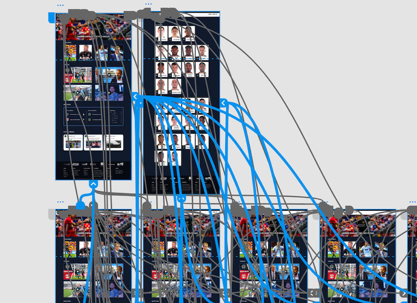

In my first term at Drexel University, we were tasked with redesigning a website of our choice. Being from Philadelphia and a big soccer fan, I decided to redesign the website of the local Philadelphia Union team.
Before designing the site, I had to go through the whole design process. This included researching, sketching, and experimenting with various wireframes, color choices, and typography combinations. The first initial research exercise I completed was a cardsorting exercise. This helped me get a general idea of how I would restructure the website, making the user-experience more logical for the end-user.

Experimenting with different designs was an important step in finding what would work best for the redesign of the site. During this step, I used Adobe XD to experiement with various layouts, before deciding which one to make a high-fidelity prototype for.

Experimenting with different color palettes and fonts was another critical step in discovering what the end-product would look like.
One of the most challenging parts of this process was making navigation bar function within the Adobe XD program. This process took hours to ensure that every page was correctly linked.
Overall, I learned a lot throughout the process of creating Project 1 in my first quarter at Drexel. It helped me understand the details and choices that need to be made when designing a website and I feel that my understanding of UI design grew tremendously.